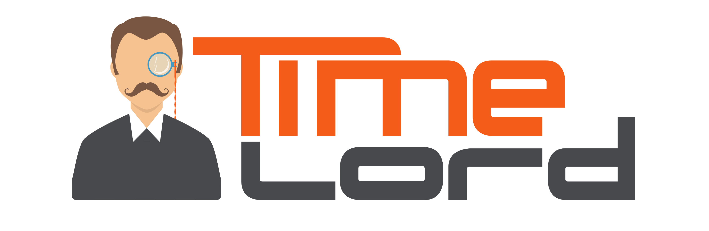
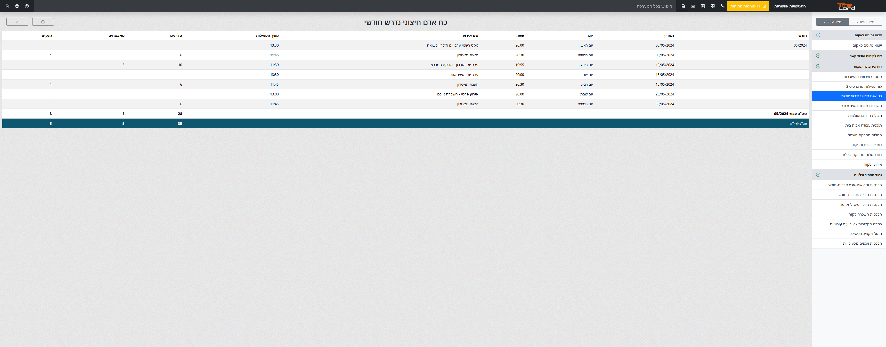
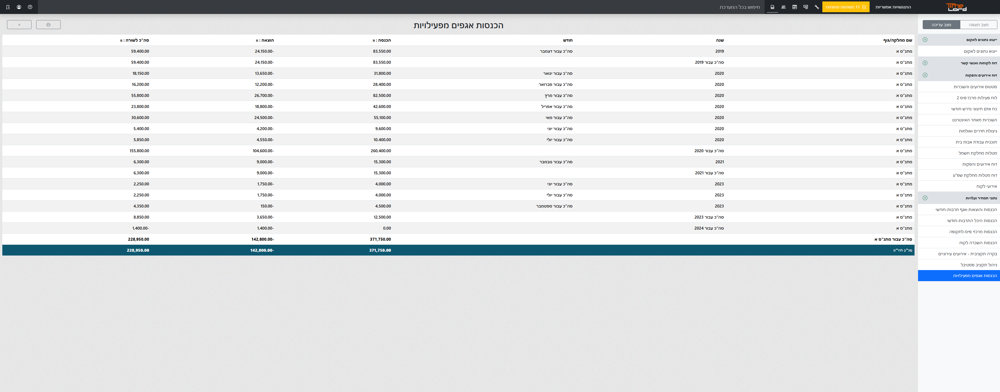
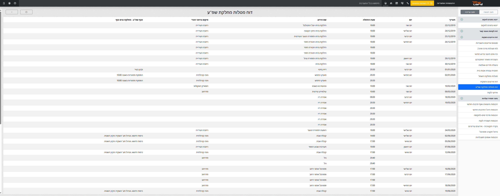
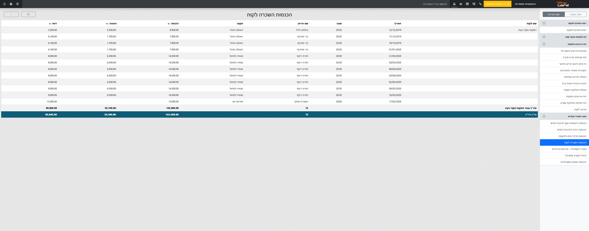
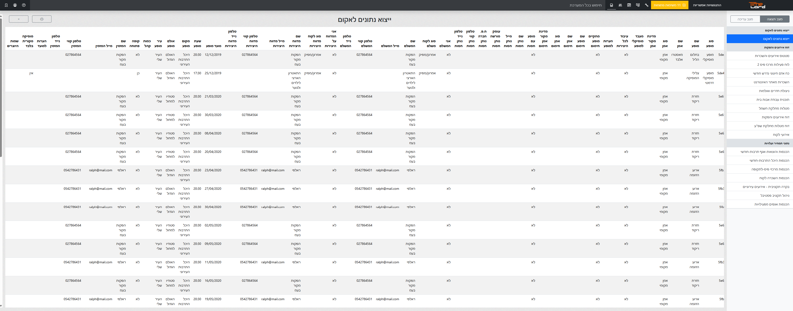

הלוח שבו לכל פעילות יש
תיק דיגיטלי חכם משלה.
ב-TimeLord כל שיבוץ בלוח – מחוג שבועי ועד אירוע שיא – הופך למקור האמת של הארגון. מקום אחד שמרכז את כל הפרטים, הדרישות והתיעוד.


ב-TimeLord כל שיבוץ בלוח – מחוג שבועי ועד אירוע שיא – הופך למקור האמת של הארגון. מקום אחד שמרכז את כל הפרטים, הדרישות והתיעוד.
כל נתון שמוזן למערכת – שעות, תקציב או משימות – מתגבש אוטומטית לדוח מקצועי. בחר סוג דוח כדי לראות אותו בפעולה:




